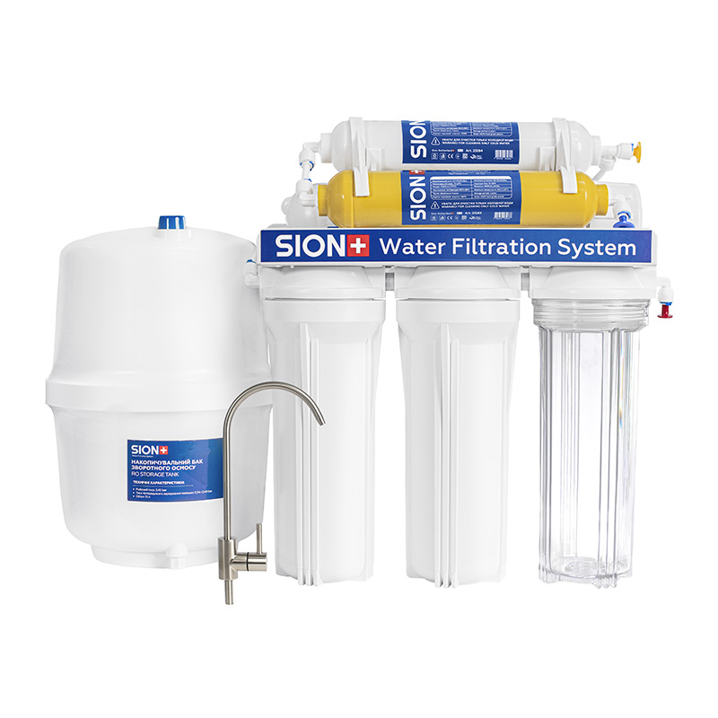

1 / 8
Фільтр зворотного осмосу Sion 6-75
4455 грнПро товар
Sion 6-75 - система зворотного осмосу для глибокого очищення питної води від механічних домішок, запахів, присмаків, бактерій і вірусів.
Модель має шість ступенів очищення, включно з мембраною Vontron 75G, постфільтром і мінералізатором для відновлення мінерального складу води.
Характеристики
- Кількість етапів фільтрації
- 6
- Об’єм бака
- 7 л
- Особливості
- Мінералізатор
- Продуктивність
- 285 л/добу
- Продуктивність
- 12 л/год
- Тиск на вході
- 2-3 бар
- Максимальна температура води
- 40 °С
- Вага
- 10.3 кг
- Габарити фільтра
- 45.8 х 13.5 х 41.5 см
- Гарантія
- 1 рік